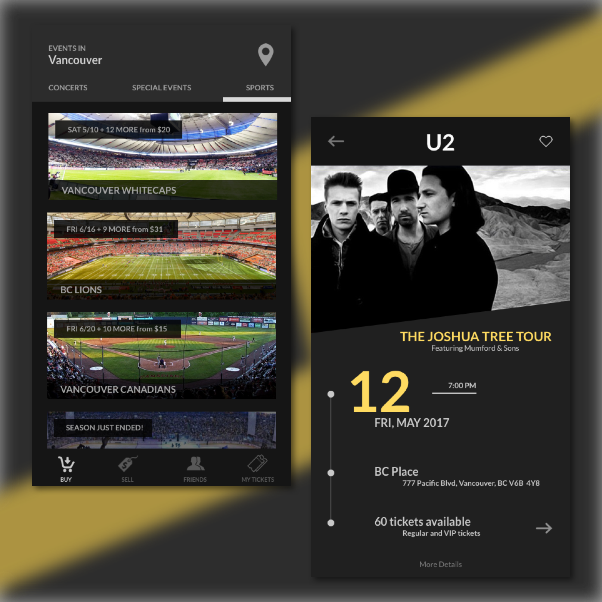
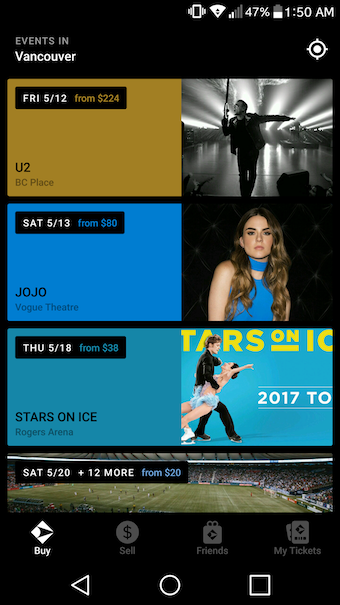

Day 59 - Let's Find Something To Do
I realized there has been an app in my phone that I didn't like using because it was a little messy. It's an event app where users are able to sell and buy tickets for cheap. This can be for concerts, special events or even sport games. I've made some changes to the homepage of the app and revamped the screen quite a bit for the individual events. This app is called: Gametime.

For the homepage, the main thing I changed was the categories located in the top banner. At first, Gametime was only for sports events. However, in the past year, they have started placing concerts and special events within this app. It got messy. For a returning user, opening the app to search for a sports event got frustrating. I would be shown concerts that I never heard of. Not only that, I had to scroll down half the screen just to find the hockey game I wanted to see the prices for. This was bad UX. In order to get rid of this confusion and frustration, I decided to give the user a choice of what they want to see by creating the 3 menu options: Concerts, Special Events and Sports. This allows for flexibility and eliminates the messiness of the app. I also changed the icons of the app to icons that are universally known, ones that people will understand right away when they see it.
As for the single event page, I went more dramatic on the changes. I wanted to create add a splash of creativity making the screen more attractive. I included the important information that the user will want to know which are the date of the concert, the number of tickets available, and the location of the concert. I was going to add a description of the concert as well, but I thought It'd go best in the "More Details" screen.
I really liked how the design came out of this one. I'm not too sure if the two screens are consistent in terms of colour and style, but I guess it's a little more on the hard side since the main screen are mainly pictures with different colours.